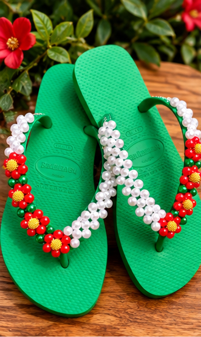
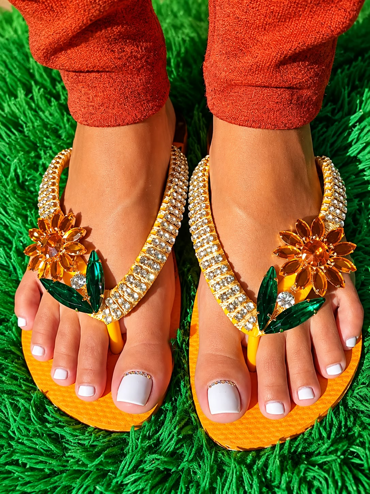
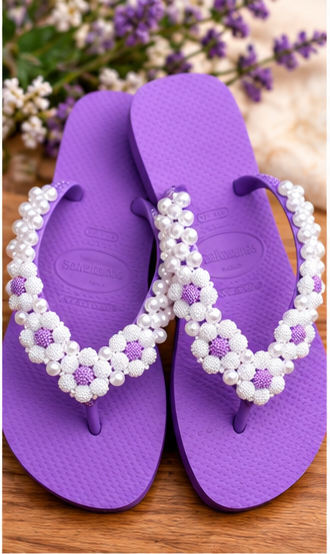
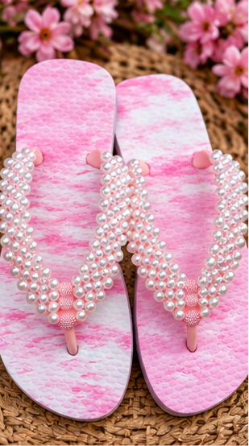
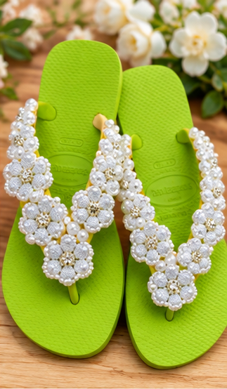
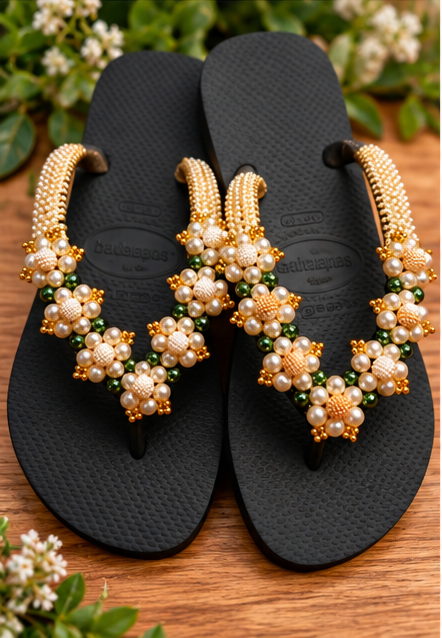
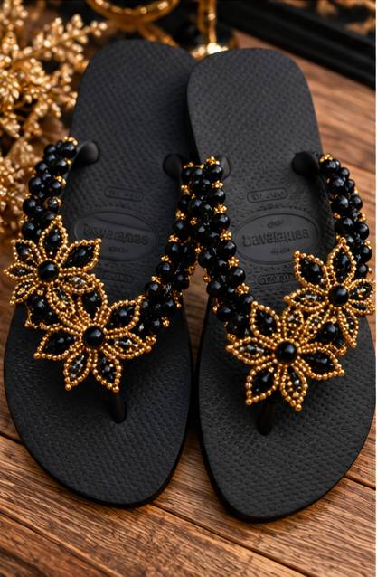
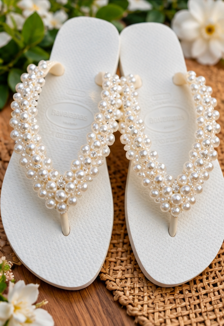

Feito sob encomenda

Floral Verde
Chinelo verde com bordados florais vermelhos e detalhes em pérolas brancas.
Delicadeza, conforto e exclusividade em cada detalhe. Conheça nossos chinelos bordados com pérolas, produzidos artesanalmente sob encomenda.

Peças artesanais confeccionadas sob encomenda em Birigui – SP

Chinelo verde com bordados florais vermelhos e detalhes em pérolas brancas.

Chinelo lilás com delicados bordados florais em pérolas e contas claras.

Chinelo rosa mesclado com bordados brilhantes e pérolas.

Chinelo verde-lima com flores artesanais bordadas em tons claros.

Chinelo preto com bordados dourados, pérolas e detalhes verdes.

Chinelo preto com flores bordadas em preto e dourado.

Chinelo branco com bordados delicados em pérolas e detalhes brilhantes.
Na Foco no Chinelo, cada peça é produzida artesanalmente por Aline Araújo, em Birigui, São Paulo. Nossos chinelos personalizados recebem bordados delicados com pérolas, pedras e strass, unindo conforto, beleza e exclusividade. Cada encomenda é preparada com atenção aos detalhes, para quem valoriza peças feitas à mão.
Pérolas, pedras e strass aplicados à mão com máxima atenção aos detalhes.
União perfeita entre exclusividade, bem-estar e elegância para você.
Peças artesanais confeccionadas por Aline Araújo em Birigui — SP.
Um caminho simples e direto para garantir o seu chinelo personalizado exclusivo
Explore nossa coleção e encontre o chinelo que mais combina com você.
Clique em Consultar este modelo para falar diretamente com a Aline e combinar os detalhes.
Consulte as possibilidades de personalização, valores e prazo de produção diretamente com a artesã.